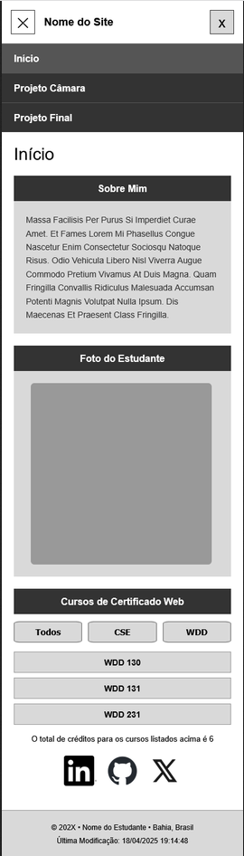
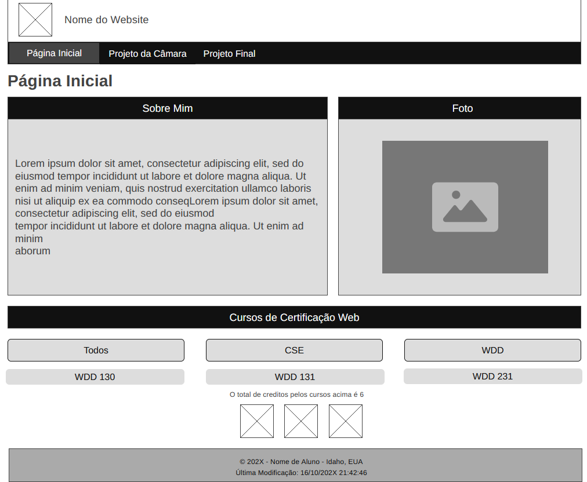

Cenário 1
Quais serviços de engenharia a empresa oferece e qual deles atende à minha necessidade?
WDD 321
Luciano Milani Piechnik
O nome EngenhoMais Engenharia foi escolhido para representar uma empresa de engenharia que busca oferecer soluções profissionais, confiáveis e eficientes aos seus clientes.
A palavra "Engenho" está relacionada à engenharia, conhecimento técnico e capacidade de desenvolver soluções. O termo "Mais" transmite a ideia de agregar valor e oferecer um atendimento diferenciado.
Domínio sugerido: engenhomaisengenharia.com.br
O objetivo do site é divulgar uma empresa de engenharia e apresentar seus conhecimentos, qualificações, capacitações e serviços prestados.
O site funcionará como uma apresentação profissional da empresa, permitindo que potenciais clientes conheçam sua área de atuação, compreendam os serviços disponíveis e encontrem informações para entrar em contato.
O projeto também terá como objetivo transmitir confiança, profissionalismo e organização por meio de uma interface moderna, responsiva e acessível.
Os cenários representam perguntas que possíveis visitantes do site poderiam fazer ao procurar uma empresa de engenharia.
Quais serviços de engenharia a empresa oferece e qual deles atende à minha necessidade?
Quais são as qualificações e capacitações dos profissionais responsáveis pelos serviços?
Como posso entrar em contato com a empresa para solicitar informações ou contratar um serviço?
Quais soluções de engenharia são oferecidas para empresas e clientes que precisam de suporte técnico?
A paleta foi escolhida para transmitir profissionalismo, confiança, tecnologia e estabilidade, características relacionadas ao segmento de engenharia.
Hex: #123B5D
Será utilizado no cabeçalho, títulos principais e elementos de destaque.
Hex: #F28C28
Será utilizado como cor de destaque, acentos, botões e elementos importantes da interface.
Hex: #F4F7F9
Será utilizado como cor de fundo para proporcionar conforto visual e contraste.
Hex: #1F2933
Será utilizado principalmente nos textos e parágrafos para facilitar a leitura.
A tipografia foi escolhida para proporcionar uma aparência profissional e facilitar a leitura em dispositivos móveis e computadores.
Será utilizada nos títulos, subtítulos e elementos de destaque do site.
Engenharia, qualidade e soluções.
Será utilizada nos parágrafos e textos informativos, priorizando a legibilidade.
Soluções profissionais de engenharia para diferentes necessidades.
O wireframe será utilizado para planejar a estrutura e o posicionamento dos elementos da página inicial antes da implementação do design final.
Serão produzidos dois wireframes manualmente: um para uma viewport pequena, representando dispositivos móveis, e outro para uma viewport grande, representando tablets ou computadores.


O projeto final será organizado em três páginas principais:
A estrutura poderá utilizar JavaScript para apresentar dinamicamente informações sobre serviços e qualificações, conforme os requisitos do projeto final.